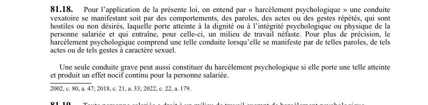

art-81.18-LNT : définition du harcèlement psychologique
Un article du wiki ⚖️ Recueil législatif
En bref
Définit le harcèlement psychologique : une conduite vexatoire, par des comportements, paroles, actes ou gestes répétés, hostiles ou non désirés. Il s'agit d'une disposition de définition.
- Cinq éléments cumulatifs : conduite vexatoire ; répétée.
- Une conduite grave isolée peut constituer du harcèlement si l'effet nocif est continu.
- Notion charnière : un harcèlement reconnu peut fonder une réclamation pour lésion psychologique.
🌐 LegisQuébec · 📄 PDF officiel (page 37)
Texte officiel : capture du PDF

Toucher l'image pour l'agrandir🔗 Ouvrir a cette page : LNT.pdf : page 37 · texte a jour au 26 mars 2024
Voir aussi
- art. 81.19 : droit à un milieu sans harcèlement · consacre le droit de tout salarié à un milieu de travail exempt de harcèlement psychologique et l'obligation corrélative de l'employeur : prendre les moyens raisonnables pour le prévenir et, dès qu'une conduite est portée à sa connaissance, pour la faire cesser.
- art. 81.20 : politique de prévention obligatoire · article qui établit deux choses : (1) l'intégration des règles anti-harcèlement aux conventions collectives et (2) l'obligation pour tout employeur d'adopter et de rendre disponible une politique de prévention du harcèlement psychologique.
- art. 28 LATMP : présomption de lésion · présomption : une blessure qui arrive sur les lieux du travail alors que le travailleur est à son travail est présumée une lésion professionnelle.
- ↑ Loi : LNT
Pages qui pointent ici (10)
- art-80-LNT : congés familiaux Recueil législatif
- art-81.18-LNT : article 81.18 Recueil législatif
- art-81.19-LNT : droit à un milieu sans harcèlement Recueil législatif
- art-81.20-LNT : recours harcèlement Recueil législatif
- Définition légale du harcèlement psychologique Recueil législatif
- Habachi c. Commission des droits de la personne (1999) Recueil législatif
- Harcèlement psychologique Recueil législatif
- LNT Recueil législatif
- LNT : Chapitre VI : Harcèlement psychologique Recueil législatif
- Loi sur les normes du travail (LNT) Droit du travail